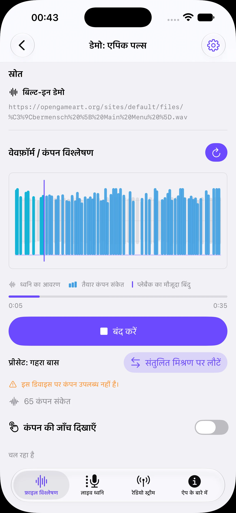
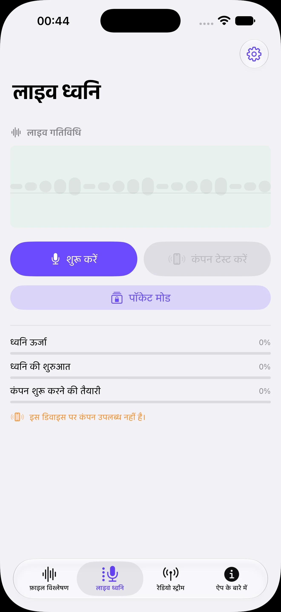
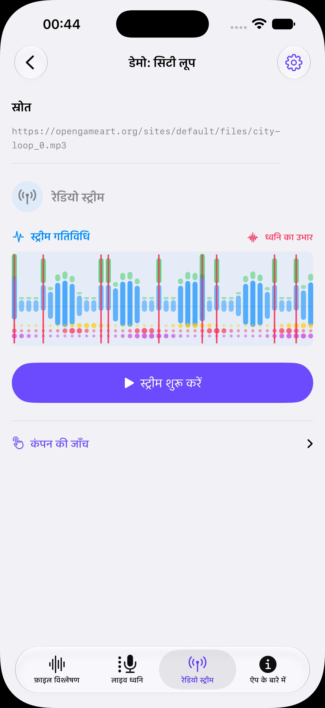
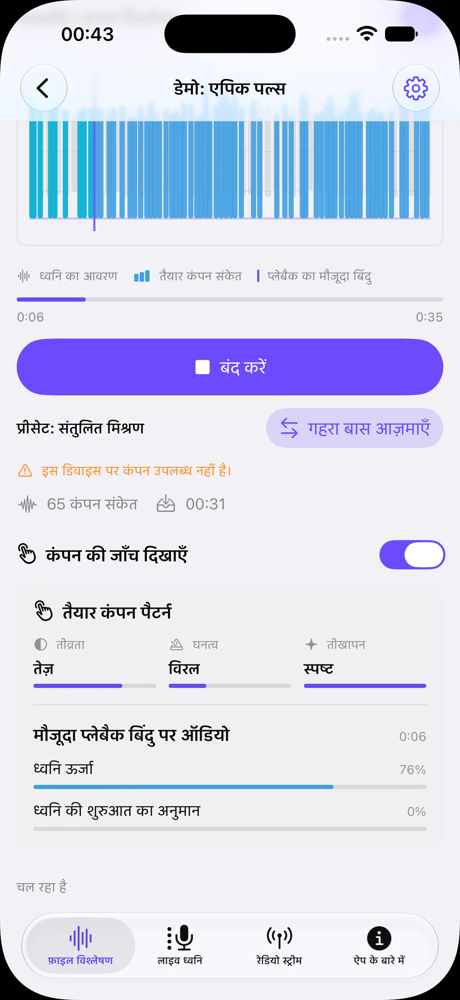

01
ऑडियो और वीडियो फ़ाइलें
फ़ाइल इंपोर्ट करें या बिल्ट-इन डेमो चलाएँ। एक बार विश्लेषण करें, नतीजा सेव करें और ताल के साथ कंपन फिर चलाएँ।


संगीत की ताल कंपन से महसूस करें
समर्थित iPhone पर बीट और बास को कंपन में बदलें। चार बिल्ट-इन डेमो आज़माएँ, विश्लेषण सेव करें और छह प्रीसेट में से चुनें।
फ़ाइल इंपोर्ट करें या बिल्ट-इन डेमो चलाएँ। एक बार विश्लेषण करें, नतीजा सेव करें और ताल के साथ कंपन फिर चलाएँ।

आसपास की आवाज़ का स्तर देखें और माइक्रोफ़ोन चालू करने से पहले समर्थित iPhone पर कंपन टेस्ट करें।

समर्थित ऑडियो या वीडियो स्ट्रीम के सीधे लिंक चलाएँ। HLS सिर्फ़ प्लेबैक के लिए है।

ऐप की वास्तविक स्क्रीन हिन्दी में दिखाई गई हैं। स्ट्रीम गतिविधि उदाहरण के डेटा पर आधारित है।
छह प्रीसेट में से चुनें और तीव्रता, संवेदनशीलता, घनत्व और समय का तालमेल बदलें।

कंपन के लिए Taptic Engine वाला समर्थित iPhone चाहिए। iPad पर ऑडियो और विश्लेषण दिख सकते हैं, लेकिन iPhone जैसे कंपन मानकर न चलें।
समर्थित लोकल ऑडियो या वीडियो का विश्लेषण करें और नतीजा ऑफ़लाइन चलाएँ। लाइव ध्वनि के लिए माइक की अनुमति चाहिए। समर्थित सीधे ऑडियो और वीडियो स्ट्रीम के लिए इंटरनेट चाहिए। HLS सिर्फ़ प्लेबैक के लिए है। संगीत सेवाओं की सुरक्षित स्ट्रीम समर्थित नहीं हैं।
TactiBeat कोई चिकित्सा उपकरण नहीं है और श्रवण यंत्र, कॉक्लियर इंप्लांट, चिकित्सकीय देखभाल या पेशेवर सलाह का विकल्प नहीं है।
नहीं। ऐप में चार CC0 डेमो हैं। किसी डेमो का विश्लेषण करें और समर्थित iPhone पर उसका कंपन चलाएँ।
समर्थित लोकल ऑडियो या वीडियो का विश्लेषण करें और नतीजा ऑफ़लाइन चलाएँ। लाइव ध्वनि के लिए माइक की अनुमति चाहिए। समर्थित सीधे ऑडियो और वीडियो स्ट्रीम के लिए इंटरनेट चाहिए। HLS सिर्फ़ प्लेबैक के लिए है। संगीत सेवाओं की सुरक्षित स्ट्रीम समर्थित नहीं हैं।
समर्थित iPhone पर «कंपन टेस्ट करें» आज़माएँ। लाइव ध्वनि के लिए माइक की अनुमति दें और धीमी आवाज़ होने पर स्रोत के पास जाएँ या संवेदनशीलता बढ़ाएँ। iPad पर वैसा ही कंपन हार्डवेयर होना ज़रूरी नहीं।
नहीं। लाइव ध्वनि सिर्फ़ माइक से आसपास की आवाज़ सुनती है। TactiBeat में किसी फ़ाइल या समर्थित सीधे मीडिया लिंक को चलाएँ।
नहीं। हर सेव किया विश्लेषण अपनी सेटिंग रखता है। दोबारा विश्लेषण करने के लिए «फिर से बनाएँ» चुनें और समीक्षा की गई सेटिंग सेव करें।
फ़ोन के कंपन से सुर, बोल या आवाज़ की बनावट सही-सही नहीं आती। TactiBeat ताल और समय पर ध्यान देता है। यह कोई चिकित्सा उपकरण या पेशेवर देखभाल का विकल्प नहीं है।